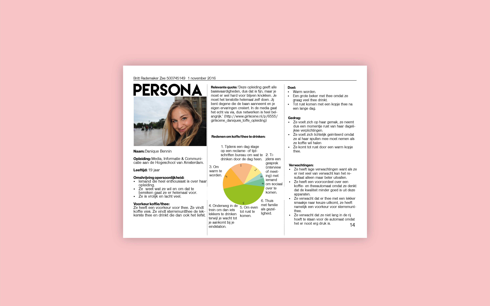
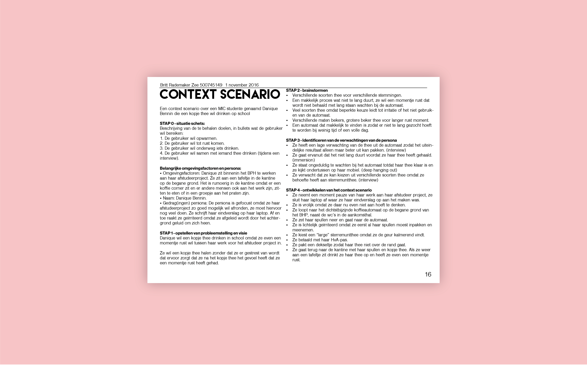

KOFFIE EN THEE AUTOMOATEN
Indesign
User Centered Design september 2016
De opdracht
Bij User Centered kregen we de opdracht om de koffie en thee automaten van het Benno Premselahuis (Amsterdam) te verbeteren. Deze verbeteringen heb ik gebaseerd op een onderzoek dat ik gedaan heb aan de hand van de opgestelde user requirements. Uiteindelijk zijn er drie oplossingen voor de automaten gekomen die ik gepresenteerd heb op een poster.
Het eindresultaat
User Centered Design was een leerzaam vak voor mij. Ik had hiervoor nog nooit een onderzoek gedaan om iets te verbeteren voor een bepaalde doelgroep. Ik het interessant om me in te leven in de doelgroep en te onderzoeken waar ze zich nou mee bezig houden en op basis daarvan een product beter te maken. Ik heb geleerd om eerst uitgebreid een onderzoek te doen en niet zomaar iets te verbeteren. Doordat ik iets daarop baseerde kwamen er hele andere uitkomsten uit dan ik in eerste instantie verwacht had.


